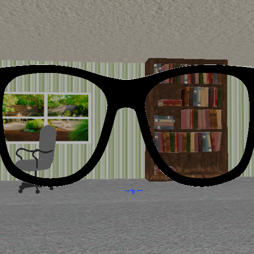
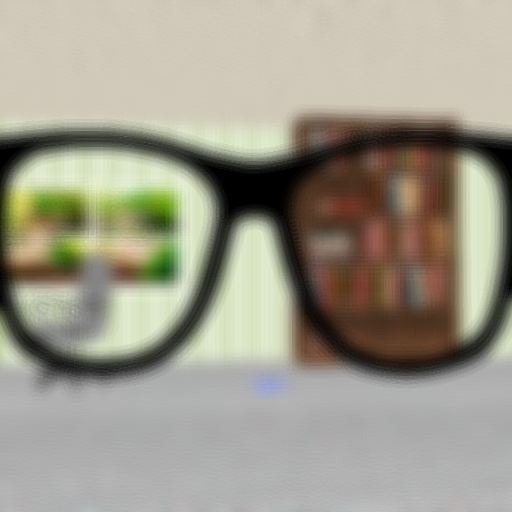
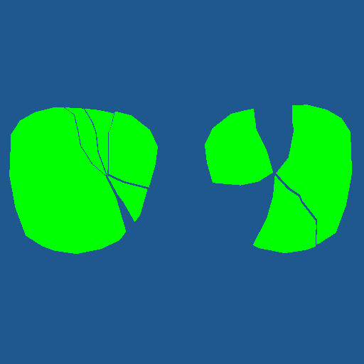
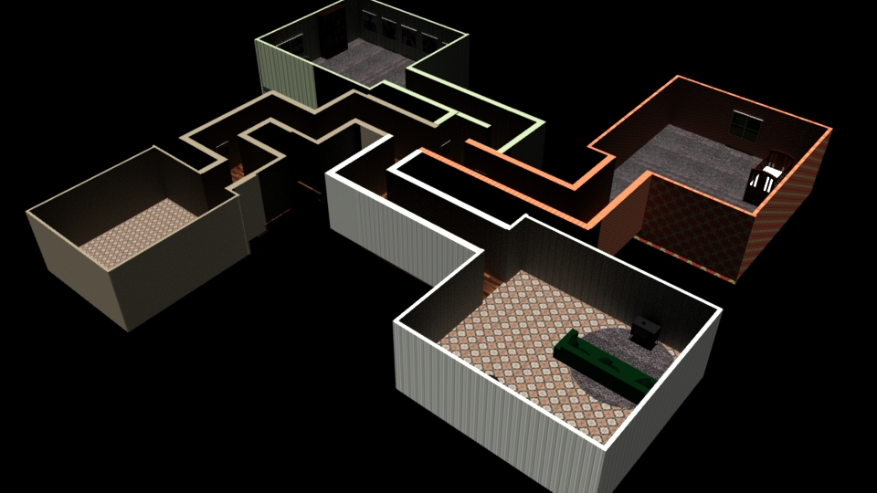

Seeing 20/20: Real-Time 3D Graphics Project
As part of Cal Poly's Real-Time 3D Graphics course, I developed the idea of a game where the user is slowly going blind and must collect shards of their glasses in order to see clearly from that part of the screen. Before the user goes completely blind, they must accomplish certain tasks while a toddler and dog are trying to get in your way. I pitched this idea to my class at the beginning of the quarter, and had a very positive response with regards to the number of people wanting to be a part of this team. I led a team of 5 and together we refined the game and developed the idea into a fully functioning real-time 3D game in OpenGL.
My duties as team manager included running meetings to discuss goals for each sprint and to keep myself and my team on schedule. I was also in charge of demoing each iteration of our game to the entire class in order to receive feedback.
Our game integrated several graphics libraries such as Freetype (text on screen), irrKlang (sound), and Assimp (loading textured and rigged meshes). We also developed our own technologies, and implemented shadow mapping, view frustum culling, blur/blur compositing, animations, and simple pathing. One of the technologies I focused on most was the blur effect. I accomplished this by rendering the scene to a texture, and then rendering the glass fragments to another texture as pure green. Using another shader, I blurred the scene texture to a third texture, so that now I had access to a full render of the scene, a blurred render to the scene, and essentially a map to use for compositing. In yet another shader, I took in all three textures and, using the glasses texture as a map, rendered out to the screen from the normal texture if the pixel was green, and from the blurred texture if it wasn't. Below is an example of the three input textures.
Normal Texture
Blurred Texture
Green Screen Texture
Another part of the game I worked on was building the house model. I used Maya to build the layout and add textures to the house, and as a fun little easter egg I added windows with real photos of gardens and photos on the walls of me and my teammates as well as our teacher and teaching assistants.
